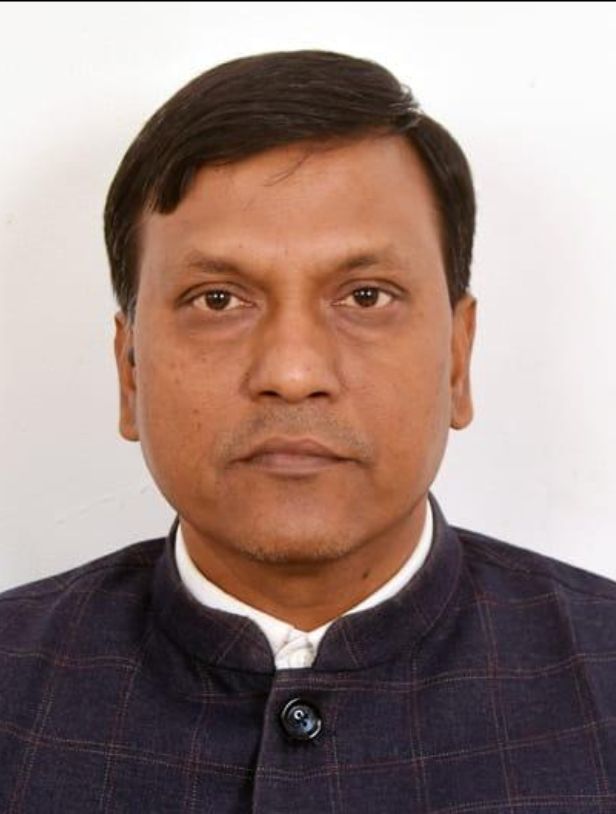

Assistant Professor (Academic Level 11) January 2016 – Present
Department of History, Ram Lal Anand College, University of Delhi

Dr. Arvind Patel
Department of History
Ram Lal Anand College, University of Delhi
arvindpatel.history@rla.du.ac.in
Ram Lal Anand College, University of Delhi, New Delhi
+919650934370
Department of History, Patna University, Patna
2007
Department of History, Patna University, Patna
2002
Patna College, Patna University, Patna
1999
Ancient Indian History
Buddhism
Environmental History
Department of History, Ram Lal Anand College, University of Delhi
Swami Shraddhanand College, Maharaja Agrasen College, Aryabhatta College – University of Delhi
Minor Research Project: Awareness among the Students for Green Campus – A Case Study of Selected Colleges of Delhi University (2019–2020).
Books
Papers